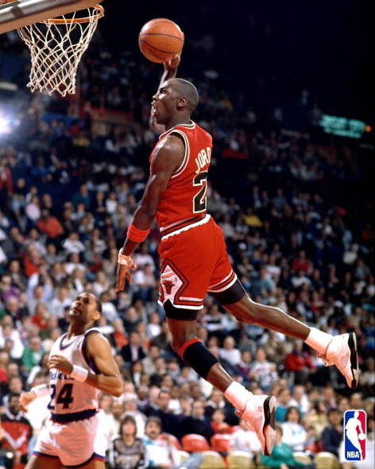

먼저 농구부터 소개하자면, 저는 농구를 시작한 지 얼마 되지 않았습니다.
때는 2019년 봄, 학교에서 농구 수행평가를 하였는데 저는 관심이 별로 없었고
수행평가라는 것이 다 그렇듯이 열심히 하기만 했습니다. 하지만 전 학년이 같이
농구 수행평가를 하는 만큼, 친구들도 농구 수행평가를 연습한다고 같이 농구를
하러 점심시간에 나가 농구를 하자고 하였습니다. 그때부터 농구에 관심이 생기고
재미를 붙여, 지난 9월에 있던 학교 농구대회에 선발로 나가기도 하면서 개인적으로
가장 최근에 관심을 가지고 하는 취미가 되었습니다.

두번째로, 남고생들의 주요 대화주제이자 취미인 게임입니다. 저는 어릴적부터 많은
게임을 즐겨 왔고, 가장 전형적인 취미라고 생각합니다. 게임에 대해 중독이나 학업 둥으로
많은 부정적인 의견도 있지만, 저는 그것은 일부일 뿐이고 게임을 건전하게 즐긴다면 충분히
취미가 될 수 있다고 생각합니다. 그리고 저는 프로그래밍을 배우고 제가 제일 먼저 하고 싶은 건,
제가 원하는 게임을 제가 스스로 만들어 보는 것입니다. 이런 부분에서 게임과 프로그래밍이 밀접한
관련이 있고, 프로그래밍에 대한 계기 중 하나가 제 취미인 게임 때문이라고도 생각합니다.